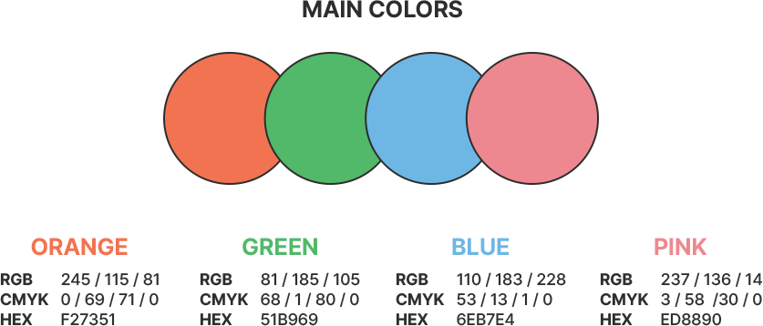
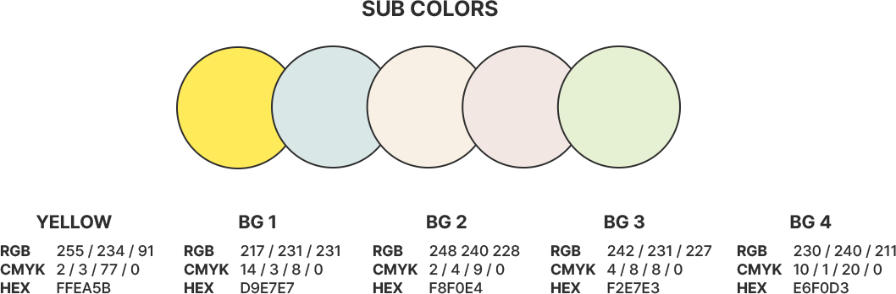
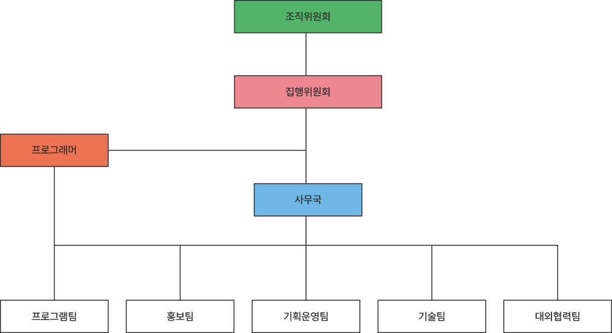

BSFF 소개
BUSAN
STREET - (DISTANCE)
FILM
FESTIVAL
부산거리영화제는
부산의 거리에서 열려
우리의 거리를 좁혀주는
작은 영화제입니다.
BUSAN
BUSAN
부산거리영화제의 개최지는 부산입니다.
그러나 부산거리영화제의 영화 상영 장소는 ‘부산’하면 바로 생각나는
멋진 바다와 휴양지가 아닙니다.
평범한 사람들이 평범하게 살아가는 장소가 바로 부산거리영화제의
영화가 상영되는 곳입니다.
STREET & (DISTANCE)
부산거리영화제의 ‘거리’에는
길거리라는 의미와 물리적 거리라는 두가지 의미가 있습니다.
거리영화제는 누구나 오갈 수 있는 평범한 거리에서,
관객과의 물리적 거리와 세상을 살아가는 타인과의 거리 모두 좁혀지는 순간이라는
의미를 담아 ‘거리’라는 단어를 사용하였습니다.
STREET
FILM
FILM
부산거리영화제에서는 다양한 장르와 국가의 작품을 상영하기 위해 노력합니다.
작품성과 대중성을 놓치지 않고 모두가 한마음으로 볼 수 있는 작품들을 위주로 하며
부산거리영화제에 오시는 관객분들의 삶이 이전보다 나아지길 바라는 마음으로
상영 작품을 선정합니다.
FESTIVAL
부산거리영화제는 평범한 사람들을 위한 작은 축제라는 느낌으로
매년 기획하고 있습니다.
꽃샘추위가 지나고 변덕스러운 날씨 속에서 진행되는 만큼
날씨 변수가 따르곤 하지만 새로 오는 봄을 맞으며 즐기는 영화제는
특별한 경험이 될 것이라 생각합니다.
FESTIVAL
개최 개요
BSFF 개최 개요
| 명칭 | 2024 부산거리영화제 |
|---|---|
| 기간 | 2024년 4월 18일(목) ~ 4월 23일(화) 6일간 |
| 성격 | 비경쟁 비영리 지역영화제 |
| 슬로건 | 거리 위의 우리, 우리들의 거리 |
| 규모 | 총 56편의 장편, 14편의 단편 |
| 장소 | 부산 전 지역 |
| 주최 | 부산거리영화제 |
거리 위의 우리, 우리들의 거리
"부산거리영화제는 길 위에 선 모두를 위한 영화제입니다."
부산거리영화제는 모두에게 열린 영화제를 지향하며, 모두에게 공평한 문화 접근 기회를 제공하기 위해 노력합니다.
또한 부산의 문화예술 접근성을 높이고 다양한 문화 콘텐츠를 제공하고 건전한 여가 문화를 정착시키고자 합니다.
독립영화계와 부산을 포함한 지방 영화 커뮤니티의 발전을 돕기 위해 노력하며, 세상을 비추기 위해 노력하는 전세계 영화들을 알릴 기회를 만드는 동시에 관객들에게는 쉽게 접하기 어려운 영화들을 제공하는 자리를 만들기 위해 노력합니다.
궁극적으로 더 나은 사회, 서로를 더욱 가깝게 느끼는 사회를 만드는 데에 부산거리영화제가 이바지할 수 있다면 더 바랄 것이 없겠습니다.
부산거리영화제에 오신 관객 모두가 잊지 못할 봄날의 추억을 가지고 집으로 돌아가셨으면 좋겠습니다.
부산거리영화제는 무료 영화제입니다.
- 부산거리영화제는 누구나 보러 올 수 있고, 어떤 작품이든 무료로 볼 수 있는 열린 영화제를 지향하고 있습니다.
문화를 누리는 사람들이 특정 누군가로 한정되어서는 안 되고, 누구나 같은 위치에서 같은 문화를 누릴 수 있는 자리를 제공하기 위해 부산거리영화제는 늘 노력하고 있습니다.
부산거리영화제는 전 상영작이 야외상영으로 진행되는 영화제입니다.
- 부산거리영화제가 상영되는 장소는 모두 야외입니다. 티켓 예매 제도로 운영하고 있으나 현장 예매도 가능하여 누구나 보편적으로 누릴 수 있는 문화를 지향하고 있습니다.
부산거리영화제의 기부 티켓과 굿즈 수익금 일부는 지역 사회를 위해 기부됩니다.
- 부산거리영화제 수익의 일부는 평등한 사회를 만들기 위해 저소득층 및 사회적 취약계층을 돕는 데에 사용됩니다.
BSFF 프로그램
프로그램 이벤트
- 속닥속닥 영화토-크 : 전문과들과 나누는 영화 토크 프로그램
- BSFF 거리평론가 : 관객이 작성하는 영화 평론 프로그램
- 순간 속으로 : 단편 영화 제작 프로그램
- 구석구석 스탬프랠리 : 상영 장소 스탬프 랠리 프로그램
BSFF 전시 / 공연
- 거리, 영화, 오늘과 내일 : 전문과들과 나누는 영화 토크 프로그램
- BSFF 2024 거리음악제 : 관객이 작성하는 영화 평론 프로그램
관객 참여 이벤트
- 영화 속 거리 걷기 : 영화 속에 나온 부산의 거리를 걷고 인증하는 프로그램
- 상영장소 인증샷 이벤트 : 상영 장소에서 사진을 찍어 공유하는 이벤트
- BSFF LUCKY DRAW : 영화 티켓으로 하는 럭키드로우
- 영화 리뷰 이벤트 : 영화 리뷰를 sns 및 블로그에 게시하는 이벤트
FI
BSFF IDENTITY
BSFF IDENTITY
BSFF IDENTITY
BSFF IDENTITY
BSFF IDENTITY
BSFF IDENTITY
BSFF IDENTITY
BSFF IDENTITY
BSFF IDENTITY
Logo & Symbol 로고 & 심볼
메인 한글 로고
부산거리영화제의 '거리'라는 단어에 담긴 길거리와 물리적 거리라는 두 가지 의미를 표현하기 위해 한글 로고의 타이틀과 심볼 사이에 언더라인을 추가하였다.
하단 서브타이틀에도 라인에 간격이 불규칙한 점선을 추가하여 점차 가까워지는 거리를 추상적으로 표현하였다.
메인 심볼
부산거리영화제의 심볼은 영사기의 필름롤로, 웹에서 사용할 심볼은 필름롤과 영사기 아이콘을 분리하여
영사기 아이콘이 개별적으로 돌아가는 애니메이션이 적용되게 하였으며
홈페이지의 서브메뉴에 마우스를 올리면 각각의 메뉴 색상별로 색상이 변화하게끔 디자인하였다.
서브 로고
Color System 색상
 
부산거리영화제의 색상 컨셉은 단순하지만 밝고 희망찬 느낌을 주는 것을 의도하였다.
봄에 어울리면서 전반적으로 라인이 분명한 디자인 컨셉에 포인트가 되는 단색들을 메인 컬러로 선정하였으며,
포인트로 사용할 노란 색상과 단색 메인 컬러를 배경으로 받쳐주는 차분한 미색을 서브 컬러로 선정하였다.
Poster & Trailer 포스터 / 트레일러
2024 부산거리영화제 포스터
디자인: 윤혜주
2024 부산거리영화제 포스터는 부산거리영화제가 가지는 정체성을 나타낸다.
영문타이틀의 긴 가로선은 부산거리영화제 로고의 가장 큰 특징인 가로선과
연결되게끔 디자인하였다. 이는 부산거리영화제의 슬로건인 ‘거리 위, 우리들의
거리’에서 중의적으로 사용된 ‘거리’ 라는 단어를 나타낸다. 긴 가로선은
뻗어 있는 길거리와 그리고 두 단어 사이의 거리를
상징하였다.
영문 타이틀에서 부산거리영화제의 정체성을 나타내는
‘STREET - (DISTANCE)’의 배경에 부산 시가지 사진을 삽입하여 소박함을
나타내었으며, 이어진 듯 끊어진 듯 다양한 원형 도형으로 관객들의 거리를
상징적으로 표현하였다.
Other Color Version
2024 부산거리영화제 트레일러
제작자: 윤혜주
2024 부산거리영화제 트레일러는 거리영화제의 테마인 길거리와 부산의 테마인 바다를 보여준다. 영상은 검은 화면에서 시작해 막이 열리며 거리 장면과 바다 장면을 순서대로 보여준 후 부산거리영화제 로고 심볼 애니메이션이 등장한다. 그리고 처음과 마찬가지로 검은 화면으로 전환되며 끝난다.
길거리 영상은 아웃포커싱 효과를 주어 거리 속에 섞여있으면서도 거리를 관조하는 느낌을 주었다. 영상이 진행되며 나타나는 타이포그라피는 마지막에 블러 처리되며 사라진다.
중반부까지의 정적인 분위기와 상반되는 가벼운 로고 심볼 애니메이션은 부산거리영화제 특유의 톡톡 튀는 느낌을 주려 하였다.
사용 프로그램: 프리미어 프로, 애프터 이펙트
BSFF IDENTITY
BSFF IDENTITY
BSFF IDENTITY
BSFF IDENTITY
BSFF IDENTITY
BSFF IDENTITY
BSFF IDENTITY
BSFF IDENTITY
BSFF IDENTITY
조직 구성
| 사무국 | 프로그램팀 | 홍보팀 | 기획운영팀 | 기술팀 | 대외협력팀 |
|---|---|---|---|---|---|
| bsff@bsff.kr | bsffprog@bsff.kr | bsffpr@bsff.kr | bsffpo@bsff.kr | bsfftech@bsff.kr | bsffmark@bsff.kr |